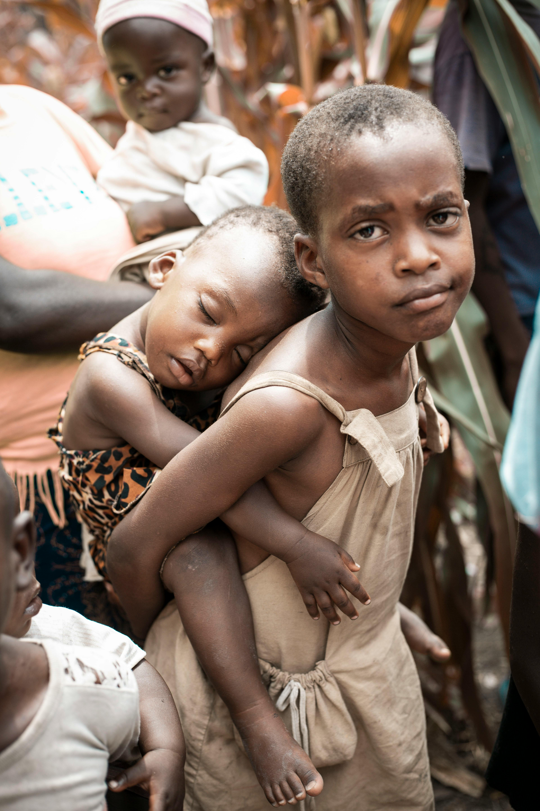
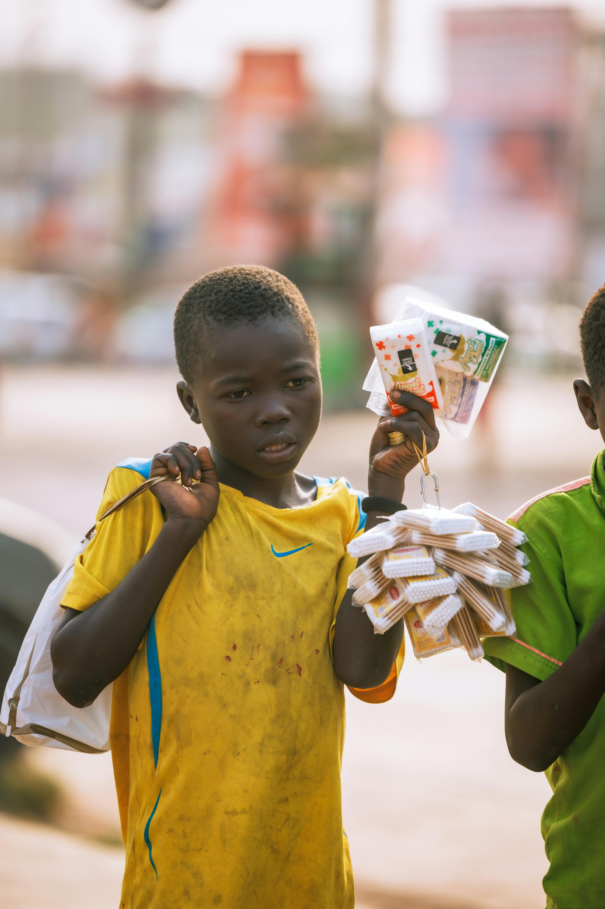
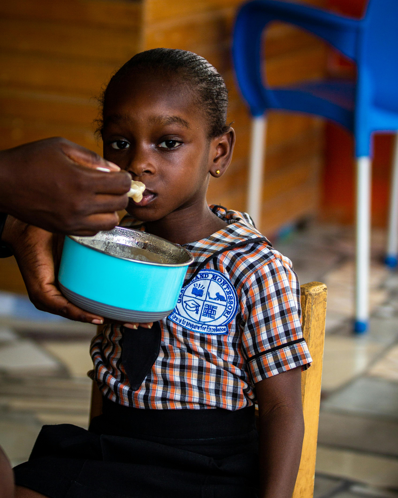
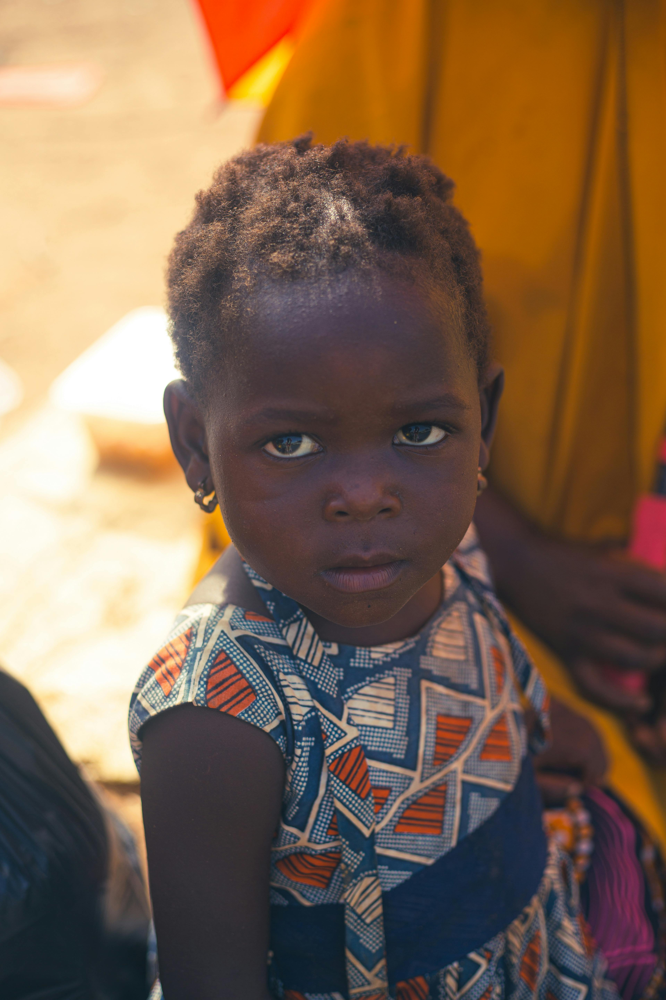
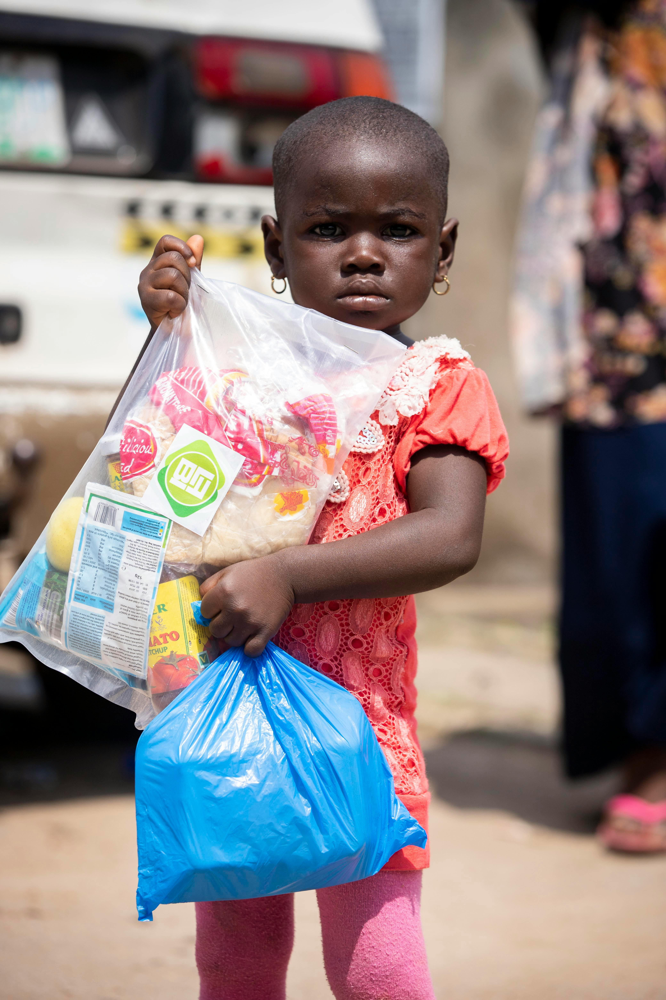
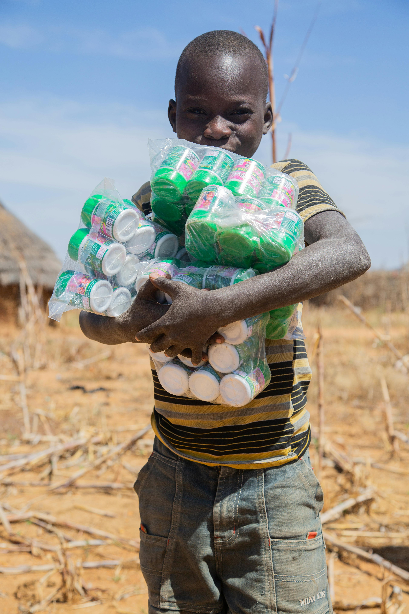
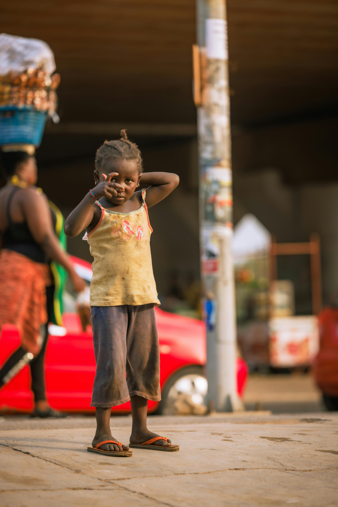
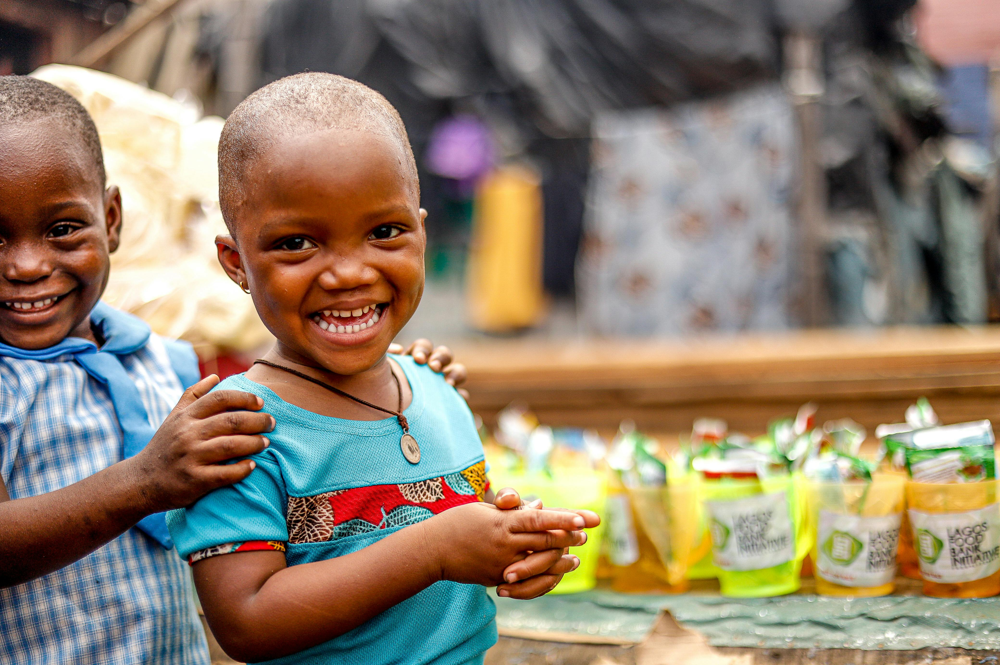

Kamau Njoroge
Kamau Njoroge is eight years old and lives in Mathare, one of Nairobi's most overcrowded slums. He is the second born of five children. His mother sells secondhand clothes by the roadside and his father left when he was three. Kamau walks to school every morning without breakfast. By midday he can barely concentrate. His teacher, Madam Wanjiku, says he is one of the sharpest children in class — but hunger is stealing his future one day at a time.
"I want to be a pilot one day. But first I just want to eat something before school."

Amina Zawadi shares a single dress with her older sister. On the days her sister wears it to school, Amina stays home. She has missed over a month of school this year because of this. She is six years old and already learning that poverty decides who gets to learn and who does not.

At just four years old, Aisha Nakato already knows what it means to be hungry. Her mother is a single parent caring for four children in Kampala's Kawempe division. Some days the family goes without a meal. Aisha is underweight for her age and her development is being affected by malnutrition.

Msafi Zawadi is eleven years old and carries the weight of the world on her small shoulders — literally. She walks to school every morning without a bag, holding her books under her arm. She has no pencils of her own. She borrows from classmates. Despite all this, she ranks in the top five of her class every term.

Akello Namuli is thirteen and in her final year of primary school in Gulu. She wants to become a nurse. But her school uniform is torn and she is embarrassed to attend. Her grandmother, who raised her after both parents passed, cannot afford a new one. Akello sits at the back of class every day hoping no one notices.

Halima Zuwena has the most intense eyes you will ever see on a five year old. She lives near Lake Victoria in Mwanza with her aunt who is also raising six other children. Halima has never been enrolled in school. Her aunt cannot afford the small materials fee. Halima spends her days watching other children walk past to school.

Neema Akinyi is seven years old and lives near the coast in Mombasa. She is the eldest child and already acts like a little mother to her two younger siblings. She comes to school most days in the same outfit — faded and too small. Her teacher has noted she is often distracted, likely from hunger. Yet she never complains.

Tendo Okello should be in class right now. Instead, at twelve years old, he sells small items on the streets of Entebbe to help his mother pay rent. He goes to school when he can — usually three days a week. His headteacher fears he will drop out completely before finishing primary school.

Zawadi Mwangi is only three years old — the youngest child we have on record in Arusha. She was found wandering near a market in dirty clothes, alone, by one of our community contacts. Her mother is ill and unable to care for her. She is being looked after by a neighbour who herself has very little.

Amara Wangeci is nine and full of joy despite everything. She walks two kilometres to school barefoot every morning. Her school has no lunch programme. By afternoon she is too weak to absorb anything the teacher is saying. She has repeated Class Two twice — not because she is not smart, but because hunger keeps interrupting her learning.
reaches a child like these
You just read 10 stories. There are thousands more like them in Kenya, Tanzania, and Uganda. One donation — no matter how small — goes directly to buying food, clothing, or school supplies for a child who needs it.